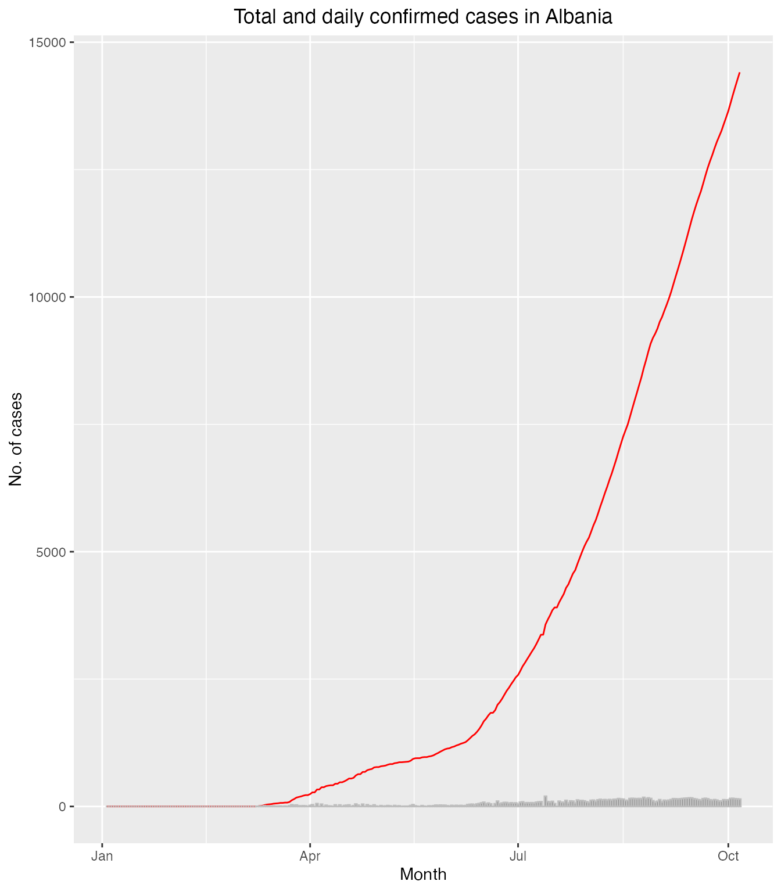
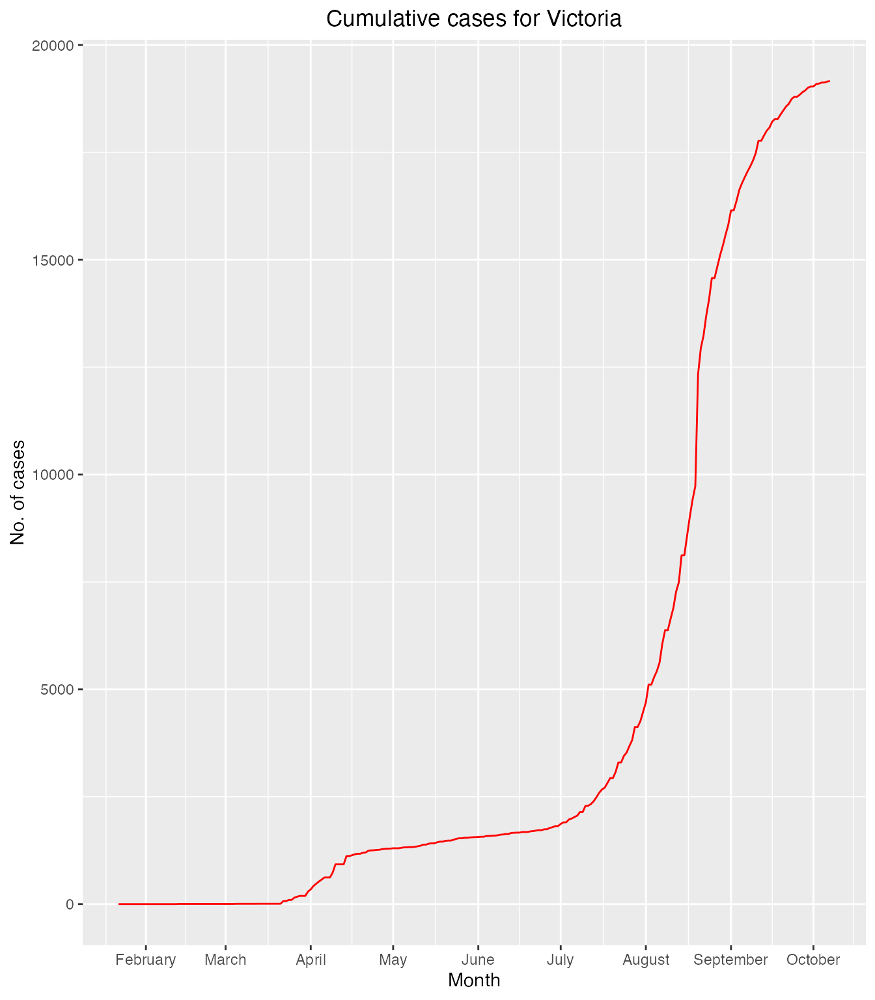

vignettes/covidstats.Rmd
covidstats.RmdThis package allows users to launch an app that will allow them to interactively visualize coronavirus statistics reported in 2020 from around the world. The package includes a function for users to launch the app. The user just has to type the function launch_app() in their console pane in RStudio to get the app up and running.
The app provides an interactive interface for the user to have a hands-on experience as they visualize coronavirus statistics around the world. The app has a 5 different sections:
The cov20 package has 3 datasets that can be used for different purposes.
This dataset contains information that shows the changes in cumulative cases and deaths over time for 235 countries. This data is sourced from World Health Organization
The dataset can be accessed by:
library(ggplot2) library(dplyr) #> #> Attaching package: 'dplyr' #> The following objects are masked from 'package:stats': #> #> filter, lag #> The following objects are masked from 'package:base': #> #> intersect, setdiff, setequal, union ggplot(data = filter(data2, Country == "Albania"), aes(x = Date_reported)) + geom_line(aes(y = Cumulative_cases), color = "red") + geom_col(aes(y = New_cases), color = "grey", alpha = 0.8) + ylab("No. of cases") + xlab("Month") + ggtitle("Total and daily confirmed cases in Albania") + theme(plot.title = element_text(hjust = 0.5, color = "black"))

This dataset contains information that shows the cumulative cases and deaths for 235 countries. This data is sourced from World Health Organization
The dataset can be accessed by:
data3 %>% head(10) #> # A tibble: 10 x 3 #> # Groups: Country [10] #> Country `Cumulative cases` `Cumulative deaths` #> <chr> <int> <int> #> 1 Afghanistan 39422 1466 #> 2 Albania 14410 400 #> 3 Algeria 52270 1768 #> 4 American Samoa 0 0 #> 5 Andorra 2370 53 #> 6 Angola 5530 192 #> 7 Anguilla 3 0 #> 8 Antigua and Barbuda 107 3 #> 9 Argentina 798486 21018 #> 10 Armenia 53083 990
This dataset displays the changes in cumulative cases in all Australian states over a time period of February 2020 to October 2020. This data is sourced from HDX
The dataset can be accessed by:
library(ggplot2) ggplot(data = filter(data5, State == "Victoria"), aes(x = Date, y = `Cumulative Cases`)) + geom_line(color = "red") + scale_x_date(date_breaks = "1 month", date_labels = c("October", "February", "March", "April", "May", "June", "July", "August", "September")) + ylab("No. of cases") + xlab("Month") + ggtitle("Cumulative cases for Victoria") + theme(plot.title = element_text(hjust = 0.5, color = "black"))
